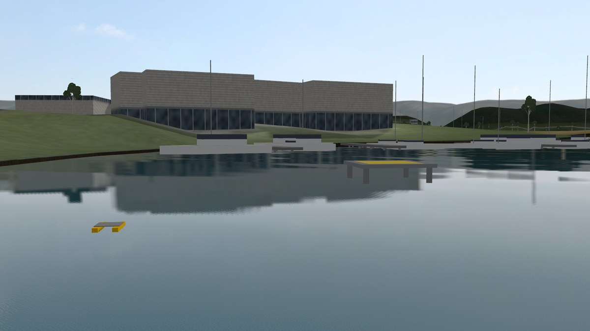
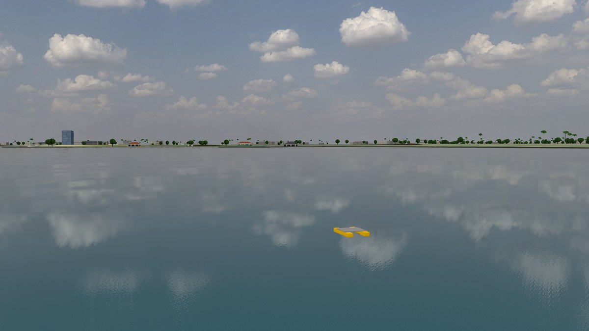
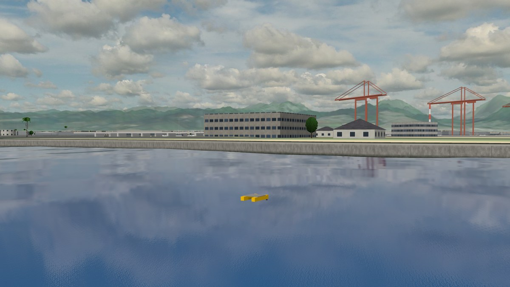
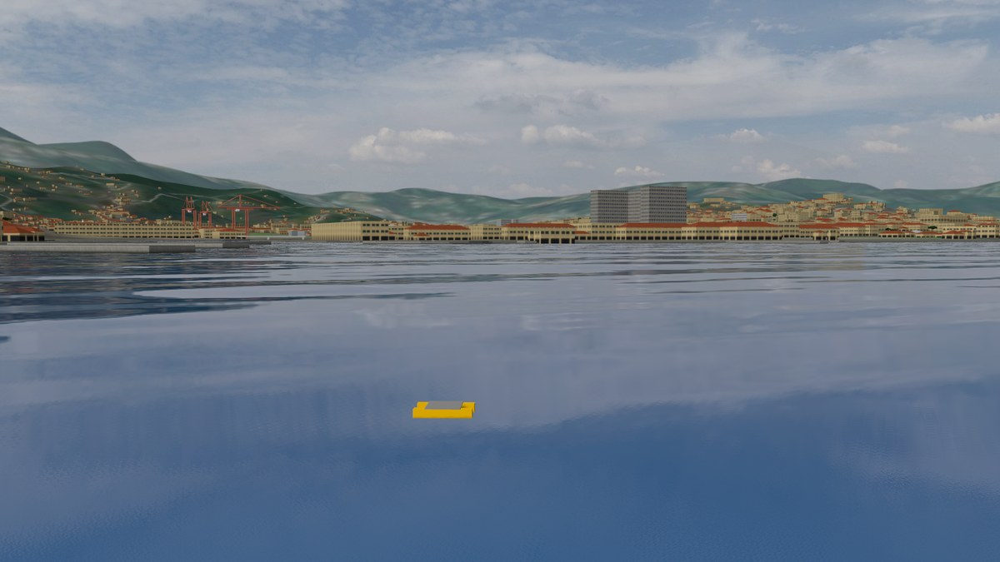
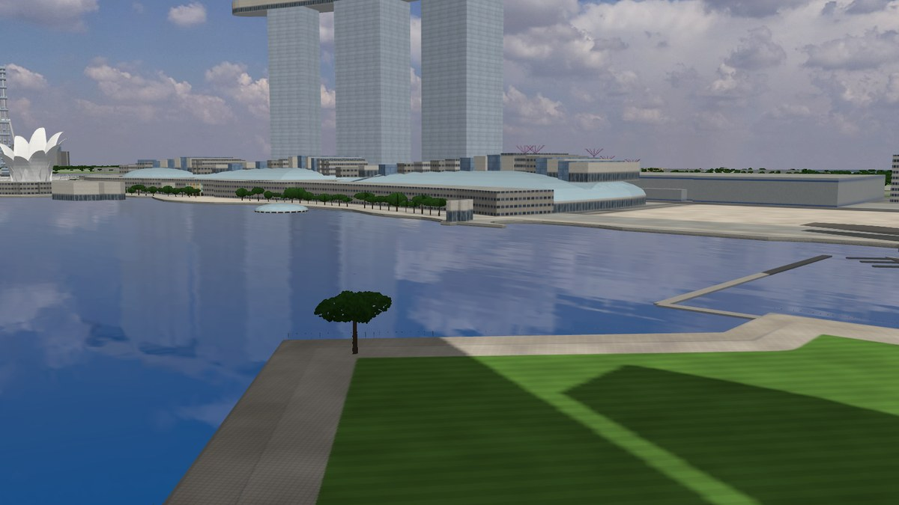

Sail the competition sites
Besides the open water world, gz-maritime ships five real venues: the three
sites of the Virtual RobotX competition (VRX), the one of the Virtual Ocean
Robotics Challenge (VORC), and Marina Bay in Singapore, where the Maritime
RobotX Challenge 2026 is held. They keep the same
world contract as open_water.sdf, so every launch file, spawn command and
service works on them unchanged. Pass one to the simulation launch and
spawn a vehicle at the start point the site recommends:
ros2 launch kai_bringup simulation.launch.xml world:=sand_island.sdf
ros2 launch kai_bringup spawn_vehicle.launch.xml name:=boat_a x:=60 y:=120 yaw:=-2.76 \
xacro:=$(ros2 pkg prefix --share kai_custom_vehicle)/models/custom_usv/model.sdf.xacro \
bridge:=$(ros2 pkg prefix --share kai_custom_vehicle)/config/ros_gz_bridge.yaml.in \
urdf:=$(ros2 pkg prefix --share kai_custom_vehicle)/urdf/custom_usv.urdf.xacro
The custom USV’s own launch does both in one go: ros2 launch kai_custom_vehicle sim.launch.xml world:=sand_island.sdf x:=60 y:=120 yaw:=-2.76. Any other vehicle spawns the same way, see
Spawn and drive.
Every world is named default inside, whatever its file is called, so the
wave service and the other world services take the same path everywhere:
gz service -s /world/default/wave/set_parameters --reqtype gz.msgs.Param \
--reptype gz.msgs.Boolean --timeout 2000 \
--req 'params {key: "sea_state" value {type: INT32 int_value: 2}}'
The sea state goes from 0 (glassy) to 9, and each site says below which range fits its water. A rowing lake never sees more than wind chop, and a lagoon or a gulf at most a slight sea; higher codes are open sea and look wrong between shores. Sand Island and La Spezia take any code: it sets the open sea, and their sheltered water gets a share of it.
Sydney International Regatta Centre

The Sydney Regatta world at its opening view.
The VRX venue from 2022 to 2024: the 2.3 km rowing course of the 2000 Olympics at Penrith Lakes, near Sydney, among the other lakes of the old quarries, with the regatta centre’s grandstand and towers, the Nepean River and Penrith around it, and the Blue Mountains rising to the west. It is built from open data and its models live on Gazebo Fuel: the first launch downloads the site, about 12 MB, and later ones use the cache. The world keeps the VRX world’s coordinates; the start point moves onto the course, and the water is fresh, so buoyancy uses 1000 kg/m³.
Launch |
|
Start point |
|
Water |
A freshwater lake, flat and sheltered |
Sea states |
0 to 2 |
A landing pad sits off the start point, for the X500 of the multi vehicle demo, which runs here by default.
sydney_regatta_lite.sdf is a lighter tier of the same world, for CI,
integrated GPUs or many vehicles and cameras. Its collisions, coordinates
and systems are the same, so a vehicle behaves the same in both; it draws
less: coarse terrain, flat roofs, no trees, 2048 px ground and a 4096 px
sky, no shadows, and the animated water out to 900 m from the middle of
the water rather than 1.5 km. Its site model is a separate download, about
4 MB:
ros2 launch kai_bringup simulation.launch.xml world:=sydney_regatta_lite.sdf
The world has an optional seabed, modelled from the depth the venue
publishes (5 m) and sloping up to the banks, for underwater vehicles,
sonars and DVLs. It is off by default; uncomment its include at the end of
sydney_regatta.sdf or sydney_regatta_lite.sdf and the first launch
downloads it too, about 5 MB.
Nathan Benderson Park

The Benderson Park world at its opening view.
The RobotX 2022 venue in Sarasota, Florida: the 2 km rowing lake with its finish tower on the island at the north end, Interstate 75 along its east bank and the wetlands and lakes of Lakewood Ranch around it. It is built from open data and its models live on Gazebo Fuel: the first launch downloads the site, about 11 MB, and later ones use the cache. The lake runs along y, so a vehicle at the origin heading 1.57 looks up the course. The water is fresh, so buoyancy uses 1000 kg/m³.
Launch |
|
Start point |
|
Water |
A freshwater lake, flat and sheltered |
Sea states |
0 to 2 |
benderson_park_lite.sdf is a lighter tier of the same world, for CI,
integrated GPUs or many vehicles and cameras. Its collisions, coordinates
and systems are the same, so a vehicle behaves the same in both; it draws
less: coarse terrain, flat roofs, no trees, 2048 px ground and a 4096 px
sky, no shadows, and the animated water out to 900 m from the middle of
the lake rather than 1.5 km. Its site model is a separate download, about
3 MB:
ros2 launch kai_bringup simulation.launch.xml world:=benderson_park_lite.sdf
The world has an optional seabed, modelled from the depths the venue
publishes (at least 3.5 m, dredged for rowing) and sloping up to the
banks, for underwater vehicles, sonars and DVLs. It is off by default;
uncomment its include at the end of benderson_park.sdf or
benderson_park_lite.sdf and the first launch downloads it too, about
5 MB.
Sand Island

The Sand Island world at its opening view, across the harbour.
The RobotX 2016 and 2018 venue in Honolulu, Hawaii: the Kalihi channel off Sand Island, between Keehi Lagoon and Honolulu Harbor, with the container terminal’s cranes, the marinas, downtown Honolulu and the Koolau range behind it, and the reef and the ocean to the south. It is built from open data (OpenStreetMap, satellite imagery and elevation) and its models live on Gazebo Fuel: the first launch downloads the site, about 9 MB, and later ones use the cache. The world keeps the VRX world’s coordinates, but the start point has moved onto the water: the VRX one is on Sand Island’s shore as the map draws it.
Launch |
|
Start point |
|
Water |
The harbour channel and the open ocean, salt |
Sea states |
any; 0 to 3 in the channel |
The world starts at sea state 3, a slight sea. The sea state sets the open ocean; a shelter map on the water scales the waves down where land, the reef and the piers shelter it, so the channel stays calmer and the quays calm (see below).
sand_island_lite.sdf is a lighter tier of the same world, for CI,
integrated GPUs or many vehicles and cameras. Its collisions, coordinates
and systems are the same, so a vehicle behaves the same in both; it draws
less: coarse terrain, flat roofs, no trees, 2048 px ground and a 4096 px
sky, no shadows, and the animated water out to 900 m from the middle of
the water rather than 1.7 km. Its site model is a separate download, about
5 MB:
ros2 launch kai_bringup simulation.launch.xml world:=sand_island_lite.sdf
The world has an optional seabed, from NOAA’s topobathymetric model of
Hawaii, for underwater vehicles, sonars and DVLs, or a hull grounding on
the shallows. It is off by default; uncomment its include at the end of
sand_island.sdf or sand_island_lite.sdf and the first launch downloads
it too, about 6 MB.
La Spezia

The La Spezia world at its opening view, from over the gulf.
The VORC 2020 venue: the port of La Spezia, Italy, at the head of its gulf, with the city’s terracotta roofs climbing the wooded hills, the naval arsenal, the container terminal and its cranes, and marinas packed with boats. It is built from open data and its models live on Gazebo Fuel: the first launch downloads the site, about 14 MB, and later ones use the cache. The world keeps the VORC world’s coordinates.
Launch |
|
Start point |
|
Water |
The port and the gulf, salt |
Sea states |
any; calm in the port |
The sea state sets the open gulf; a shelter map on the water scales the waves down inside the breakwaters, so the port stays calm and the quays calmer still (see below).
la_spezia_lite.sdf is a lighter tier of the same world, for CI,
integrated GPUs or many vehicles and cameras. Its collisions, coordinates
and systems are the same, so a vehicle behaves the same in both; it draws
less: coarse terrain, flat roofs, no trees, 2048 px ground and a 4096 px
sky, no shadows, and the animated water out to 900 m from the middle of
the water rather than 1.7 km. Its site model is a separate download, about
7 MB:
ros2 launch kai_bringup simulation.launch.xml world:=la_spezia_lite.sdf
The world has an optional seabed, from Regione Liguria’s multibeam
isobaths and the port’s published depths, for underwater vehicles, sonars
and DVLs. It is off by default; uncomment its include at the end of
la_spezia.sdf or la_spezia_lite.sdf and the first launch downloads it
too, about 5 MB.
Marina Bay

The Marina Bay world at its opening view, over the Promontory.
The venue of the Maritime RobotX Challenge 2026 (8 to 14 November 2026): the Promontory at Marina Bay, Singapore, with the floating pontoon off its east corner and the four courses, A to D, between the pontoon and the Marina Boulevard seawall. Around it is the bay and the city out to 2.3 km: the seawalls and bridges, more than 5000 buildings and 7000 trees from OpenStreetMap, and the landmarks modelled on their own, Marina Bay Sands and its SkyPark, the ArtScience Museum, the Esplanade’s domes, the Singapore Flyer (its wheel turns, once every 105 s), the Helix Bridge and the Supertree Grove. The pontoon and the courses are placed from the organisers’ site plan; the course elements themselves are not in the world, so add your own.
The world’s origin is the middle of the courses. The water is the Marina Reservoir, fresh water behind the Marina Barrage, so buoyancy uses 1000 kg/m³, and there is no tide.
Launch |
|
Start points |
course A |
Water |
A freshwater reservoir in the city |
Sea states |
0 to 2 |
The sky is a photographed one, Poly Haven’s tropical looking cumulus with the
sun where the world’s sun is, on a dome in the site model: Gazebo draws only
its built-in sky, whatever <sky><cubemap_uri> says. The water reflects the
same sky and the skyline around the bay.
The site lives on Gazebo Fuel:
the first launch downloads it, about 11 MB, with the Flyer’s wheel, and
later ones use the cache. The world has an optional seabed, modelled from
the reservoir’s reported depths, for underwater vehicles, sonars and DVLs.
It is off by default; uncomment its include at the end of marina_bay.sdf
or marina_bay_lite.sdf and the first launch downloads it too, about 4 MB.
marina_bay_lite.sdf is the day world’s lite tier, as the sites have: the
same venue, start points and collisions, but no trees, the ground and sky
at half size (182 MB of textures on the GPU against 388), no shadows, and
the animated water only out to 700 m from the bay’s middle, the static
water plane past it. From the opening view it renders 15 to 19% faster on
the laptop’s integrated GPU (53 against 45 frames per second at 1080p, 95
against 82 at 640 by 360), and 8 to 15% on the discrete one, where the
camera’s copies bound the frame rate:
ros2 launch kai_bringup simulation.launch.xml world:=marina_bay_lite.sdf
Its site model is a separate download, about 8 MB.
What to know
The shore is solid where it matters. The sites collide through boxes, which every physics engine handles cheaply: the shore within 900 m of the origin, the land within 250 m, the piers, breakwaters and moored boats within 700 m and the buildings within 450 m (500 m at Marina Bay). Farther out there is nothing to hit. The water has no floor: a sinking vehicle keeps sinking, as on open water.
The water is one model. Each site includes the water surface once, at the centre of its water, and sets
<tiles_radius>in its wave source to say how far the sea is drawn around it, in 200 m tiles; the terrain hides it wherever there is land. Buoyancy does not depend on the drawn water: vehicles float on the flat z = 0 plane everywhere.First use needs the network. The sites come from Fuel the first time they load; after that they are cached. Building gz-maritime needs no network.
The water is sheltered. The water models of the VRX and VORC sites, which ship with
kai_gazebo, carry a shelter map, the share of the open sea’s waves that reaches each point: the full sea state offshore, less in a channel or a port, none against a quay, a bank or a beach. The waves also fade out over the last tile of the drawn sea, where a static water plane carries on. It changes only what is drawn. Marina Bay’s water, a reservoir with little fetch, has none.Credits. The sites are CC BY 4.0, built from OpenStreetMap (ODbL), Sentinel-2 cloudless imagery (CC BY 4.0), the AWS Terrain Tiles and Poly Haven skies (CC0); Marina Bay from OpenStreetMap and a Poly Haven sky. All are credited in
kai_gazebo/NOTICE.
The worlds table in the reference has the same facts in one place, and Use your own world explains the contract they share if you want to build a site of your own.